Library & Grader
Find a project in the Library, then review its frames in Images, Sequence
and Stacks. The desktop app and psf-guard server serve the same
UI. Grades go straight into the catalog, so Target Scheduler can replace
rejected frames.
The Library
The Library lists every project in every registered catalog, grouped by when it was last shot: last 7 days, last 30 days, earlier work. The band at the top totals images, projects, targets, accepted frames, frames to review, missing files and grading progress.
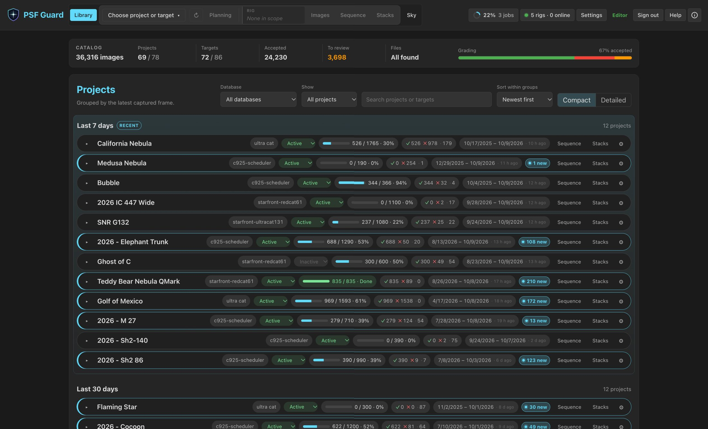
Each row is one row of pills: database, Target Scheduler state, accepted against desired (it reads Done once the goal is met), grading counts, capture dates and how long ago, and new frames since you last opened it. Sequence and Stacks open those views; ⚙ opens the plan's workspace.
- Compact and Detailed switch the whole list. The arrow at a row's left opens it into its full card, and folds it back. Set the default under Settings → Review → Library.
- Show narrows to Active, Still to shoot, Done, Draft, Inactive, Closed or No database. The search box matches project and target names. Both stay in the address.
- With database management on, the state pill is a select: choose Active, Inactive, Draft or Closed to change the project in Target Scheduler at once.
- A plan shot by several rigs is one outer pill, N rigs, with a row per rig under it.
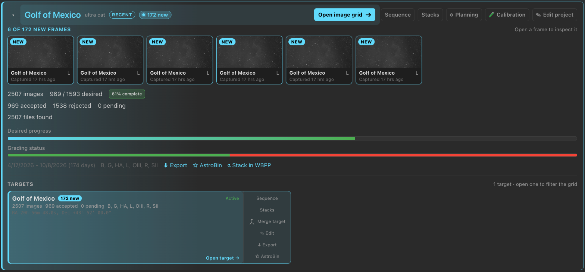
The header
The header reads left to right, from the whole to the part: Library, the project picker, Planning for that project's plan, the rig and target switcher, then Images, Sequence and Stacks, and Sky. The views wait until you pick a project.
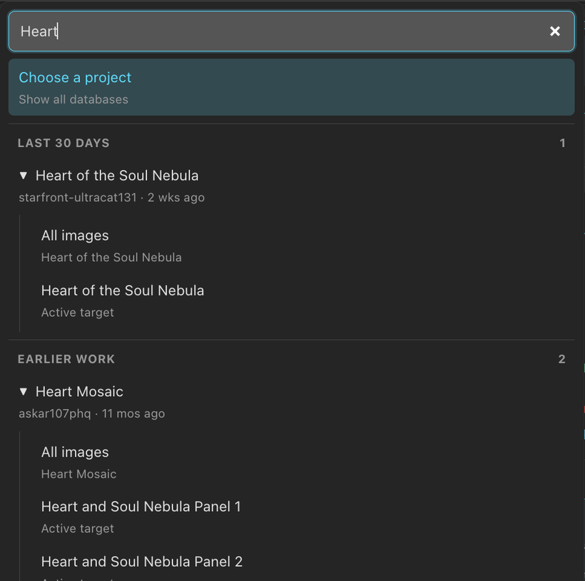

- A project shot by several rigs is one row in the picker, badged with its rig count. Its switcher lists each rig with its targets.
- The switcher fits long target names. Mosaic panels show the part that sets them apart, such as Panel 2, with the full name as a tooltip.
- The jobs chip shows overall progress and the job count. Click a job to open what it works on. See Storage & Performance.
- The Live chip counts rigs that run the Director plugin and opens Live on the Sky.
Images
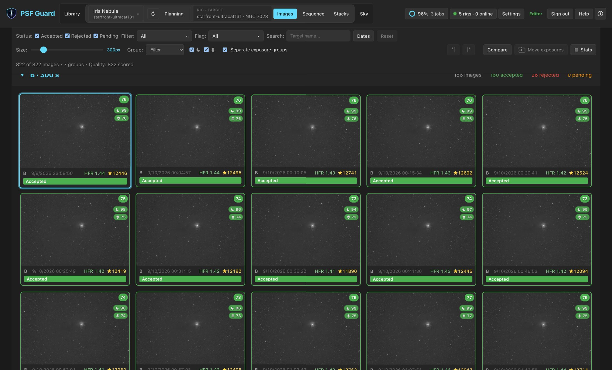
- Status has one box per grade, so everything but Rejected is one click.
- Filter and Flag open lists of boxes: Ha and OIII together, or frames with any of two flags.
- Group by filter, session, date, or filter and date. Stats sits with the other tools and expands the image count.
- Select with Shift+Click, Ctrl/Cmd+Click, or arrow keys and Space. Shift with an arrow extends the selection. Accept, reject or unmark the whole selection.
- Move exposures splits frames into another target or project. See Organize projects and targets.
- Cards name the target only when the grid mixes targets. A frame from this year shows its time; an older one shows its year.
- Previews load small first and fill in on zoom. Cards far off screen are not drawn, so a grid of thousands scrolls smoothly.
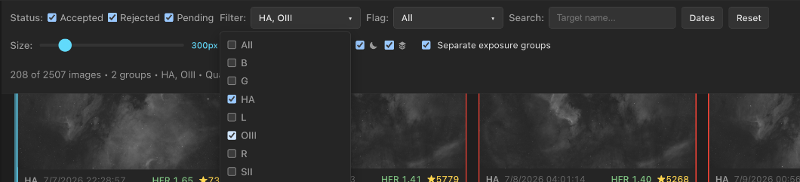
Score chips and review settings
Each card's main badge is its quality score. Two chips rank it further: the moon chip within its night, the stacked-layers chip against every comparable frame of the target and filter. Toggle them in the grid and Sequence toolbars, or under Settings → Review, which also sets whether a grade moves to the next image. Hold Shift with A, X or U to invert that once.
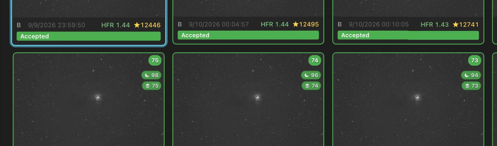
Image detail
Press Enter or double-click a card. The panel beside the frame gives its statistics, the resolved file path, the quality score with its reason, and sky context from the plate solve.
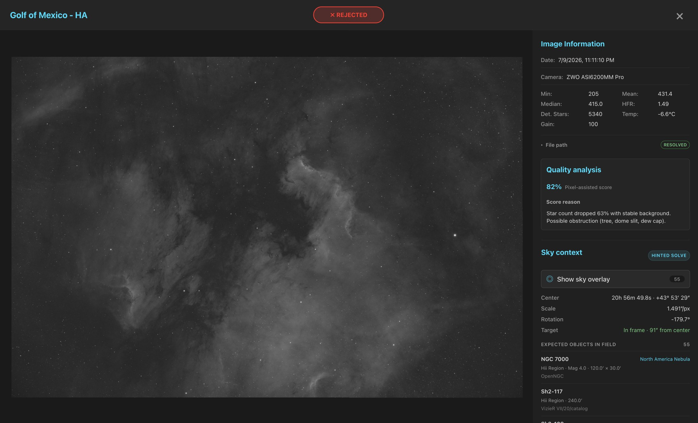
When the catalog holds a frame's calibrated or registered copies from WBPP, Siril, ASTAP or DeepSkyStacker, V or the buttons beside the image switch between them. Previews, star markers and the PSF view follow. Grid cards mark frames that have copies. See Calibrated copies.
Star overlay and HFR
Press S for the star overlay: each detection circled and labeled with its HFR. Detection uses the frame's focal length and pixel size when both headers exist, so wide fields keep small stars. P shows the PSF fit.
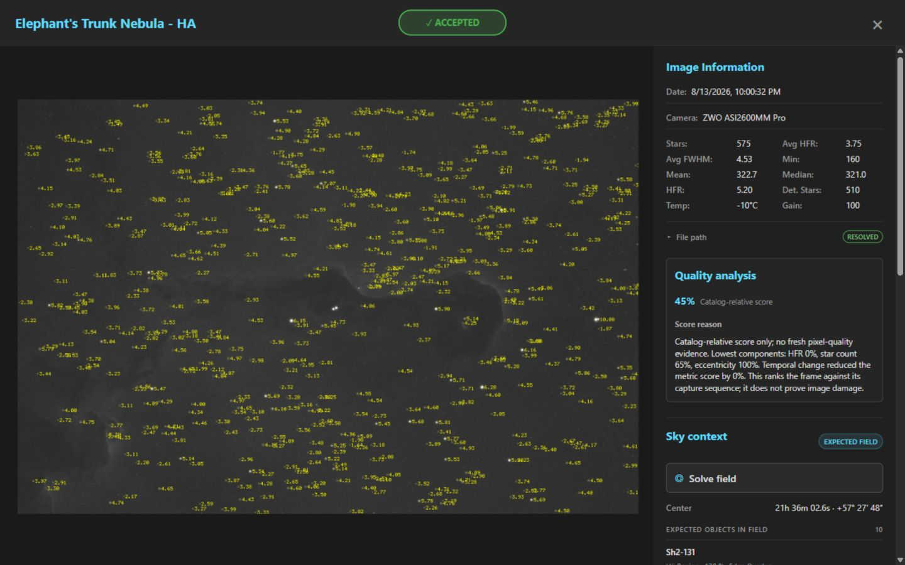
Sensor tilt inspector
Press I for nine 1:1 crops in a 3×3 grid, each with its median HFR, eccentricity and star count, a border colored by softness, and a line for the mean elongation. The summary gives tilt, field curvature and center HFR. A soft edge opposite a sharp one suggests tilt; soft corners round a sharp center suggest curvature; one elongation everywhere suggests guiding or wind. Check several frames: seeing can mimic all three.
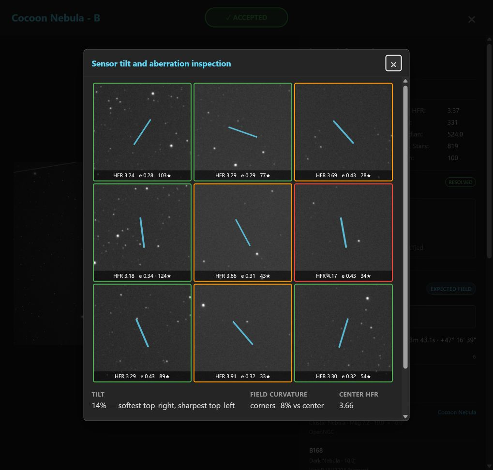
Sky context
The panel lists catalog objects expected in the field. O solves a frame with no fresh solve, or toggles the sky overlay: labels, outlines, an RA/Dec grid, the pixel scale and the target offset. The overlay stays as you last left it. See Sky Context & Solver.
Compare
Press C in the grid to put two frames side by side, with zoom and pan linked or apart. Grade both at once.
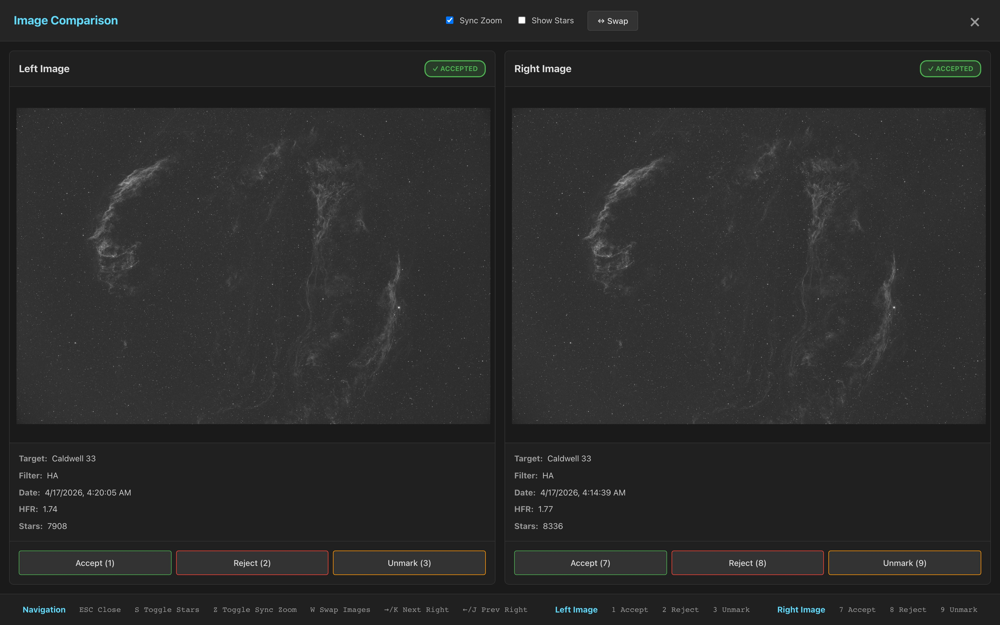
Sequence
Sequence scores a target's frames in capture order, one session or all sessions per filter. The chart shows each score; the scatter shows each solved center against the target; each card names the cause behind a low score. Use the same arrow keys and Space as the grid. See Quality Screening.

A mosaic as one view
When a project's targets form one mosaic, the switcher offers it as one choice, such as Heart Mosaic mosaic (4 panels). Images groups frames under each panel in grid order. Sequence shows every panel's frames in capture order. Stacks lays each panel's stack out as the grid and on the sky. Grading and stacking stay per panel.
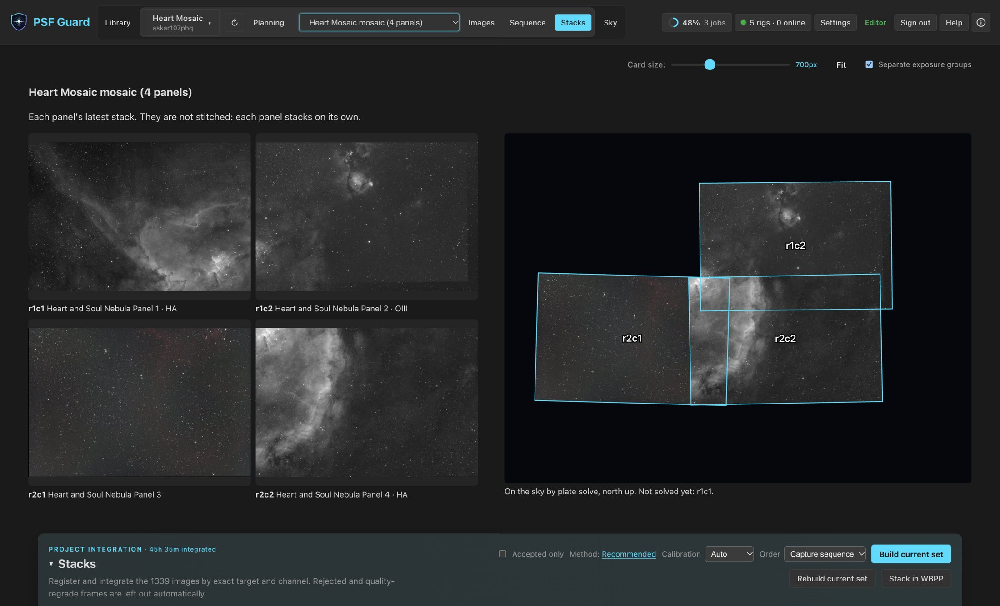
Keyboard shortcuts
| Key | Action | Key | Action |
|---|---|---|---|
| K / → | Next image | A | Accept |
| J / ← | Previous image | X | Reject |
| ↑ / ↓ | Grid row up or down | U | Unmark |
| Space | Toggle selection | Shift + A / X / U | Invert grade advance once |
| Shift + arrow | Extend selection | C | Compare (grid); color (detail) |
| Enter | Open image | Esc | Clear or close |
| S | Star overlay | P | PSF view |
| I | Tilt inspector | O | Solve or sky overlay |
| T | Satellite tracks | V | Calibrated copies |
| + / − | Zoom | 0 / 1 / F | Reset, 100%, fit |
| Z | Image size | Ctrl+Z / Ctrl+Y | Undo / redo |
Where grades go
Every grade sets gradingStatus in the active catalog, with undo and
redo. Catalogs PSF Guard creates use the Target Scheduler layout. On a live Target
Scheduler database, the scheduler counts accepted frames against each exposure plan
and shoots replacements for rejected ones.